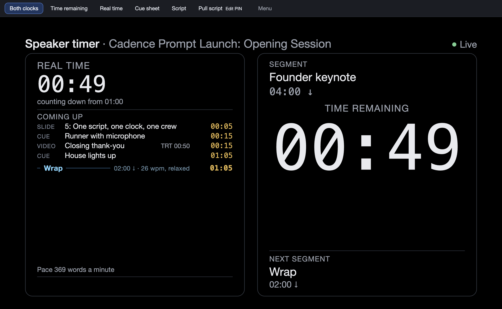
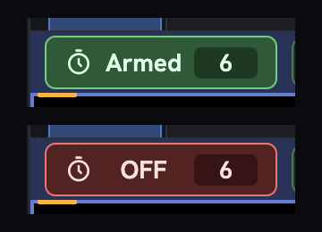
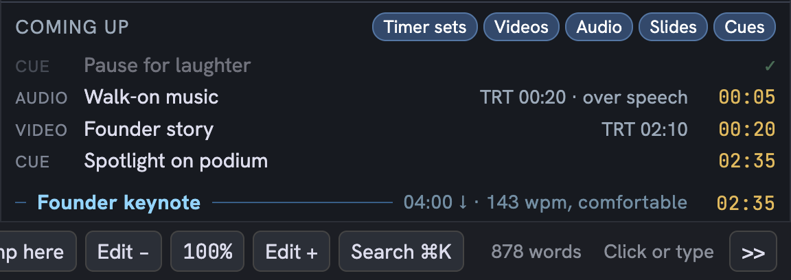
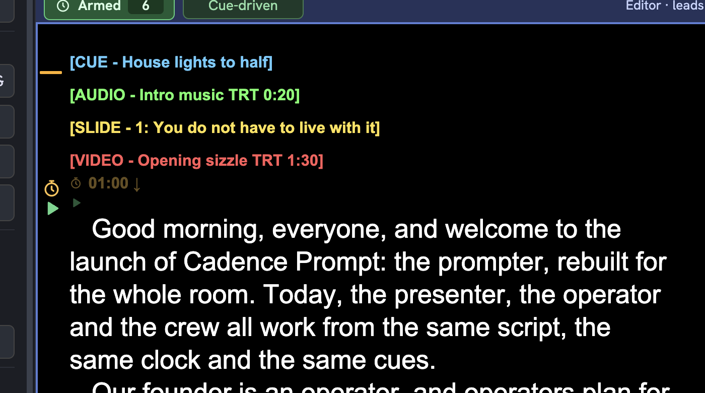
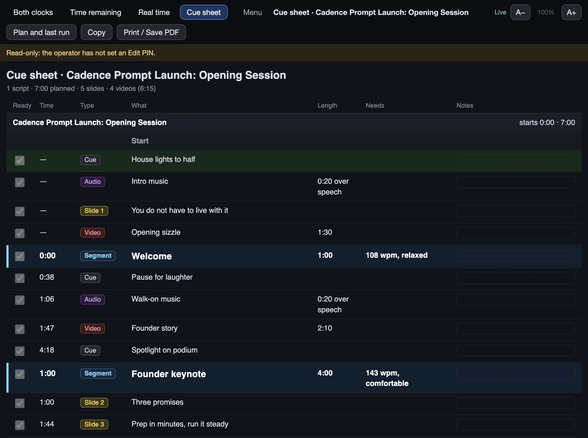
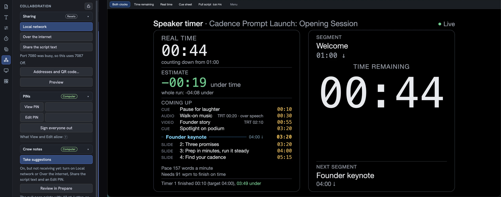
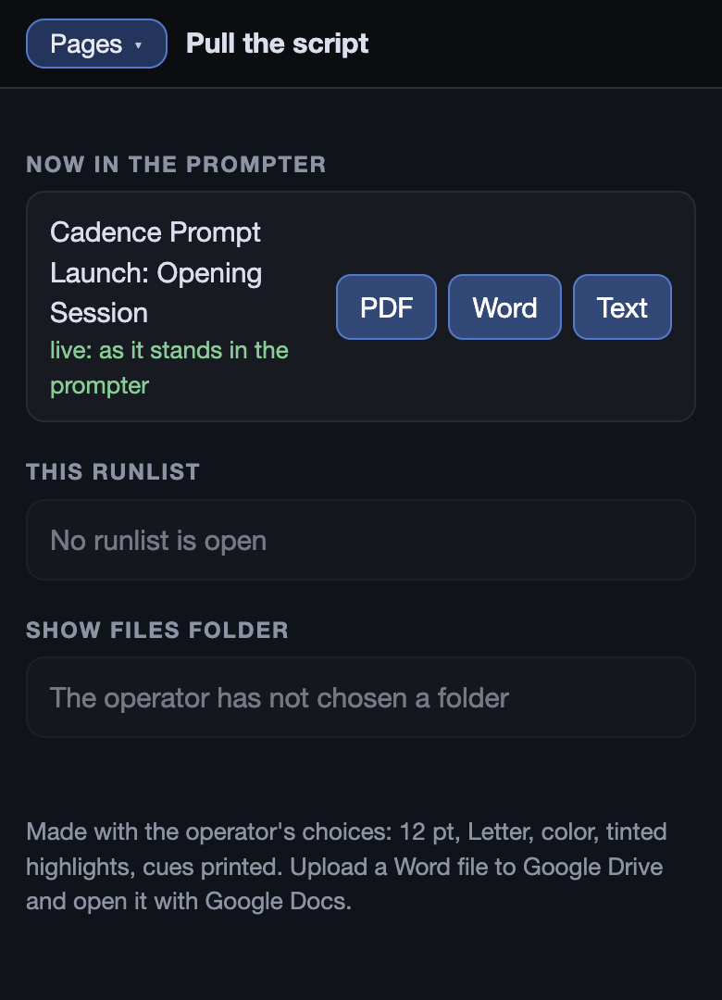
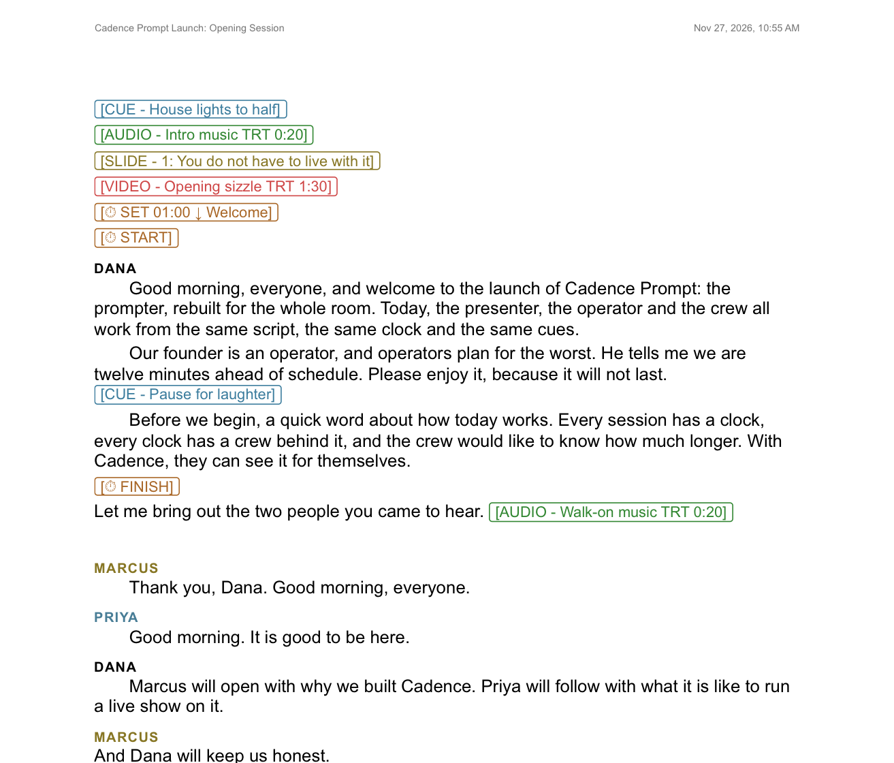

Speaker timer
A clock the presenter can trust.
The time remaining, the segment name, and a live pace estimate that says plainly whether they're running over or under. The presenter never has to do mental math on stage.

Features / Time, Cues, and Collaboration · Crew · Presenter
How much longer do they have? How long did that segment actually take? Is this the latest script? Now the whole crew can see for themselves. Timers and cues live right inside the script, everyone works off the exact same clock, and the room stays in sync without a single text thread.
Features marked Beta are built and tested, but have not yet been tried by hand at a real show. They are in the 0.2.2 beta.
Speaker timer
The time remaining, the segment name, and a live pace estimate that says plainly whether they're running over or under. The presenter never has to do mental math on stage.

Timer cues in the script
Set, start and finish cues live directly inside the script. An indicator above the editor shows how many cues are armed and turns red if they're off. Pressing Play arms them automatically, so scrolling past a Start cue kicks off the clock by itself. Pressing Pause disarms them and stops the clock. If a segment wraps with time to spare, the clock stops and turns green.

Clock colorsBeta
Five states (Running, Warning, Over time, Paused and Finished early) each get their own color, saved right with the script.
Coming up
A live list of upcoming cues ahead of the reading line, each showing the exact time until it lands. As you scroll past each cue, the list advances automatically, so you always know what's next without hunting through the script.

Cue colors
Video, slides, general, audio and bookmarks each come color-coded out of the box, and you can build custom cues of your own. Adjust any color to match the system your crew already uses.

The cue sheet
The cue sheet opens in a tab for you, or on a live page for the crew, turning every cue in your script (or across an entire runlist) into a clean rundown. Every row starts checked Ready. Uncheck one to flag a missing asset or an item to confirm, and the row turns red for the whole crew. Export it as a PDF or spreadsheet, or copy it straight into an email. It's a stage manager's rundown, built automatically from the script itself.

Share the show
Flip sharing on to open the speaker timer, the cue sheet and the live script Beta in any browser, with no extra cables or software. Crew on the venue network can follow the script in its actual colors as it tracks the reading line, adjust their own text size, and use an Edit PIN to tap a line or highlight words and send suggestions straight to your Prepare tab. Need to loop in someone off-site? Even if they're not in the building, or even in the country, Cadence can share a link that works right over the internet. When the session wraps, Sign everyone out in the Collaboration drawer clears every crew login at once.

Pull the script
When sharing is on, the crew page includes a Pull script button protected by an Edit PIN. Crew members can download the current script as a PDF, Word or text file right onto their own phone or laptop. Nobody has to tap you on the shoulder mid-show for the latest file.

Print, PDF and Word
For anyone in the room who still trusts paper, print the script or export it as a PDF, a Word document or plain text. Everything lands at a comfortable reading size in print-safe colors, with speaker names and page numbers in place. You can even export a whole runlist as one combined PDF.
